![]()

1 Introduction
Reservoir Computing (RC) is a prominent machine learning method, proposed by Jaeger (2001), Maass, Natschläger, and Markram (2002) and Lukoševičius and Jaeger (2009) that has gained significant attention in recent years for its ability to efficiently process information generated by dynamical systems. This innovative approach leverages the dynamics of a high-dimensional “reservoir” (we define it below) to perform complex computations and solve various tasks based on the response of this dynamical system to input signals. RC has demonstrated its efficacy in tackling various challenges, encompassing pattern classification and time series forecasting in applications ranging from electrocardiogram analysis to bird calls Trouvain and Hinaut (2021), language processing Hinaut and Dominey (2013), power plants, internet traffic, stock prices, and beyond Tanaka et al. (2019).
Originally, the RC paradigm was implemented in artificial firing-rate neurons (“Echo State Networks”, Jaeger (2001)) and spiking neurons (“Liquid State Machine”, Maass, Natschläger, and Markram (2002)) as a recurrent neural network (RNN) where the internal recurrent connections, denoted as the reservoir, are randomly generated and only the output layer (named “read-out”) is trained. The reservoir projects temporal input signals onto a high-dimensional feature space, facilitating the learning of non-linear and temporal interactions. Thus, this recurrent layer contains high-dimensional non-linear recombination of the inputs and past states: it is a “reservoir of computations” from which useful information can be linearly extracted (or “read-out”) to provide the desired outputs. This offers the advantage of decreasing the computing time compared to conventional RNNs while consistently maintaining performance (Vlachas et al. 2020). Besides, this RC paradigm fostered increasing interest thanks to its ability to be implemented on classical computers, as the hidden recurrent layer can be kept untrained. A wide range of physical media can be also used to replace it and Tanaka et al. (2019) recently reviewed this prolific field: from FPGA hardware (Penkovsky, Larger, and Brunner 2018), to spin waves using magnetic properties (Nakane, Tanaka, and Hirose 2018), skrymions (Prychynenko et al. 2018) or optical implementations (Rafayelyan et al. 2020). This provides interesting and potentially more efficient alternative to traditional machine learning computing.
RC leverages various hyperparameters to introduce prior knowledge about the relationship between input variables and output targets. But because the connections within the reservoir are randomly initialized, the same set of hyperparameters may exhibit diverse behaviors across different instances of the reservoir connections. This unpredictability makes it challenging to anticipate the performance of a particular hyperparameter setting, as identical settings may produce varying outcomes when applied to distinct instances of the reservoir. Moreover, selecting the most suitable hyperparameters often requires researchers to experiment with multiple combinations on a training dataset and evaluate their performance on a separate test set1. Although this approach can be resource-intensive and time-consuming, it is a compromise that is acceptable considering the rapid simulation capabilities offered by RC. Furthermore, there is a current absence of implementation in R, rendering the method challenging for users unfamiliar with Python (Trouvain and Hinaut 2022) or Julia (Martinuzzi et al. 2022).
Here, we offer comprehensive guidance to assist new users in maximizing the benefits of RC. Initially, a broad introduction to reservoir computing is presented in Section 2, followed in Section 3 by a tutorial on its application using reservoirnet, an R package built upon the ReservoirPy Python module Trouvain et al. (2020). Section 3 then introduces the workflow usage on reservoirnet for RC with two basic use-cases, and finally, in Section 4 we investigate the various challenges associated with an advanced case-study leveraging RC for forecasting COVID-19 hospitalizations. This case-study exploration includes detailed guidance on the modeling strategy, the selection of hyperparameters, and the implementation process.
2 RC presentation
RC is a machine learning paradigm which is most often implemented as Echo State Networks (ESNs), i.e. the firing-rate neuron version (Jaeger 2001). An ESN is described by three matrices of connectivity: an input layer W_{in}, a recurrent layer W and an output layer W_{out}. At each time step, the input vector u_t is projected into the reservoir which is also combined with reservoir past state x(t-1) through the recurrent connections. The output y(t) is linearly read-out from the reservoir. Input W_{in} and recurrent W matrices are kept random; only the output matrix W_{out} is trained in an offline or online method. Often a ridge regression (i.e.~a regularized linear regression) is used to obtain the desired outputs y(t) from the reservoir states x(t). Figure 1 depicts the architecture. For simplicity, we will use the term “reservoir computing” for “Echo State Network” in the remainder of the paper.
The input layer u(t) is an M-dimension vector, where M is the number of input time series, which corresponds to the values of the input time series at time t where t = 1, \dots, T. The reservoir layer x(t) is an N_{res}-dimensional vector where N_{res} is the number of nodes in the reservoir. The value x(t) is defined as follow: \begin{equation} x( t+1 ) = ( 1 - \alpha ) x ( t) + \alpha \: tanh\left( W x(t) + W_{in} u(t+1)\right) \end{equation}
The leaking rate \alpha \in [0, 1] defines the update rate of the nodes. The closer \alpha is to 1, the more the reservoir is sensitive to new inputs u(t). Therefore, the reservoir state at time t+1 denoted x(t+1) depends on the reservoir state at the previous time x(t) and the new inputs u(t+1). Both W_{in} and W are random matrices of size N_{res} \times M and N_{res} \times N_{res} respectively.
W_{in} is a matrix (usually sparse) generated using a Bernoulli (bimodal) distribution where each value can be either -I_{scale}(m) or I_{scale}(m) with an equal probability where m = 1, \dots, M corresponds to a given feature in the input layer. The input scaling, denoted I_{scale}, is a hyperparameter coefficient common to all features from the input layer or specific to each feature m. In that case, the more important the feature is, the greater should be its input scaling. W is a matrix (usually sparse) where values are generated from a Gaussian distribution \mathcal{N}(0,1). Then, the W matrix is scaled according to the defined spectral radius, a hyperparameter defining the highest eigen value of W.
The final layer is a linear regression with ridge penalization where the explanatory features are the reservoir state and the variable to be explained is the outcome to predict such that: W_{out} = YX^T ( XX^T + \lambda I)^{ -1 } Where x(t) and y(t) are accumulated in X and Y respectively such that: X = \begin{bmatrix} x(1) \\ x(2) \\ ... \\ x(T) \end{bmatrix} \text{ and } Y = \begin{bmatrix} y(1) \\ y(2) \\ ... \\ y(T) \end{bmatrix} The parameter \lambda is the ridge penalization which aims to prevent overfitting. Additionally, one can also connect the input layer to the output layer to the reservoir nodes. In that case, X is the accumulation of both such that : X = \begin{bmatrix} x(1), u(1) \\ x(2), u(2) \\ ... \\ x(T), u(T) \end{bmatrix} \text{ and } Y = \begin{bmatrix} y(1) \\ y(2) \\ ... \\ y(T) \end{bmatrix}
Overall, there are four main hyperparameters to be chosen by the user: i) the leaking rate which defines the memory of the RC, ii) the input scaling which defines the relative importance of the features, iii) the spectral radius which defines the connections of the neurons inside the reservoir which in turn defines the degree of non-linear combination of features, and iv) the ridge penalization which controls the degree of overfitting. The choice of hyperparameters often requires the user to evaluate the performance of different combinations of hyperparameters on a validation set before selecting the optimal combination to forecast on the test set.
3 Usage workflow
In this section, we will cover the basics of reservoirnet use including installation, classification and regression. A more in depth description is provided in Section 4 with the covid-19 forecast use case.
3.1 Installation
reservoirnet is an R package making the Python module ReservoirPy easily callable from R using reticulate R package Ushey, Allaire, and Tang (2024). It is available on CRAN (see https://cran.r-project.org/package=reservoirnet) and can be installed using:
Hide/Show the code
# Install reservoirnet package from CRAN
install.packages("reservoirnet")Reservoir Computing (RC) is well suited to both regression and classification tasks. We will introduce a simple example for both task.
3.2 Package workflow overview
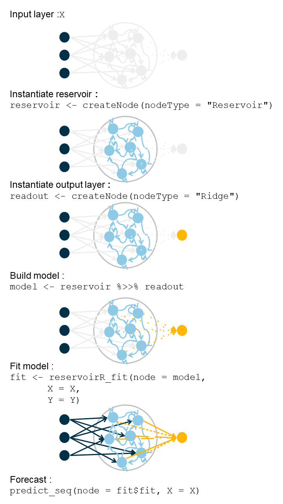
reservoirnet.
The workflow of reservoirnet is described in Figure 2. A reservoir model is created by the association of an input layer (a matrix), a reservoir, and an output layer. Both the reservoir and the output layer are created using the function reservoirnet::createNode() by specifying the node type (i.e., either Reservoir or Ridge).
This function accepts several arguments to specify the hyperparameters of the reservoir and will be detailed in future sections. After the reservoir and output layer are created, they can be connected using the %>>% operator, a specific pipe operator dedicated to reservoirnet. The model can then be fitted using reservoirR_fit() and used to make predictions on a new dataset using predict_seq().
3.3 Basic regression use-case
3.3.1 Covid-19 data
In this first use-case, we will introduce the fundamental usage of the reservoirnet package. This demonstration will be conducted using the COVID-19 dataset that is included within the package. These data encompass hospitalization, positive RT-PCR (Reverse Transcription Polymerase Chain Reaction) results, and overall RT-PCR data sourced from Santé Publique France, which are publicly available on data.gouv.fr (for further details, refer to help(dfCovid)). Our primary objective is to predict the number of hospitalized patients 14 days into the future. To accomplish this, we will initially train our model on data preceding the date of January 1, 2022, and subsequently apply it to forecast values using the subsequent dataset.
We can proceed by loading useful packages - namely ggplot2 Wickham, Navarro, and Pedersen (2018) and dplyr Wickham et al. (2023), data and define the task:
Hide/Show the code
# Load usefull packages
library(dplyr)
library(ggplot2)
library(patchwork)
library(reservoirnet)
# load dfCovid data from the reservoirnet package which contains Covid data
data("dfCovid")
# Set the forecast horizon to 14 days
dist_forecast = 14
# Set the train-test split to 2022-01-01
traintest_date = as.Date("2022-01-01")Due to the substantial fluctuations observed in both RT-PCR metrics, our initial step involves applying a moving average computation over the most recent 7-day periods for these features. Additionally, we augment the dataset by introducing an outcome column and an outcomeDate column, which will serve as valuable inputs for model training. Moreover, we calculate the outcome_deriv as the difference between the outcome and the number of hospitalized patients (hosp), representing the variation in hospitalization in relation to the current count of hospitalized individuals. The resulting smoothed data is visualized in Figure 3.
Hide/Show the code
dfOutcome <- dfCovid %>%
# outcome at 14 days
mutate(outcome = lead(x = hosp, n = dist_forecast),
# Create a new column 'outcome' which contains the number of hospitalizations ('hosp')
# shifted forward by 'dist_forecast' days (14 days). This represents the outcome we want to predict.
outcomeDate = date + dist_forecast,
# Create a new column 'outcomeDate' which is the current date plus the forecast period (14 days).
outcome_deriv = outcome - hosp) %>%
# Create a new column 'outcome_deriv' which is the difference between the predicted outcome and current hospitalizations.
# This represents the change in hospitalizations over the forecast period.
# rolling average for tested and positive_pcr
mutate_at(.vars = c("Positive", "Tested"),
.funs = function(x) slider::slide_dbl(.x = x,
.before = 6,
.f = mean))
# Apply a rolling mean (7-day average) to the 'Positive' and 'Tested' columns.
# The 'slider::slide_dbl' function is used to calculate the mean over a window of 7 days (current day + 6 days before).
# This smooths out daily fluctuations and provides a better trend indicator.
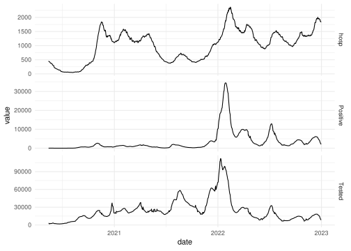
3.3.2 First reservoir
Setting a reservoir is done with the createNode() function. The important hyperparameters are the following :
- Number of nodes (
units) : it corresponds to the number of nodes inside the reservoir. Usually, the more the better, but more nodes increases the computation time. - Leaking rate (
lr) : the leaking rate corresponds to the balance between the new inputs and the previous state. A leaking rate of 1 only consider information from new inputs. - Spectral radius (
sr): the spectral radius is the maximum absolute eigenvalue of the reservoir connectivity matrix. A small spectral radius induces stable dynamics inside the reservoir, a high spectral radius induces a chaotic regime inside the reservoir. - Input scaling (
input_scaling): the input scaling is a gain applied to the input features of the reservoir. - Warmup (
warmup) : it corresponds to the number of time step during which the data are propagating into the reservoir but not used to fit the output layer. This hyperparameter is set in thereservoirR_fit()function.
In addition, we can set the seed (seed). Because the reservoir connections are set at random, setting the seed is a good approach to ensure reproducibility.
For this part of the tutorial, we will set the hyperparameter at a given value. Hyperparameter optimization will be detailed at Section 4.
Hide/Show the code
# Create a reservoir computing node using the 'createNode' function from the reservoirnet package.
# Arguments:
# - nodeType = "Reservoir": Specify the type of node to be a reservoir.
# - seed = 1: Set the seed for reproducibility, ensuring consistent results when the model is run multiple times.
# - units = 500: Set the number of reservoir units (neurons) to 500.
# - lr = 0.7: Set the leakage rate (lr) of the reservoir, which controls how quickly the reservoir state decays over time.
# - sr = 1: Set the spectral radius (sr) of the reservoir, which influences the stability and memory capacity of the reservoir.
# - input_scaling = 1: Set the input scaling factor, which scales the input signal before it is fed into the reservoir.
reservoir <- reservoirnet::createNode(nodeType = "Reservoir",
seed = 1,
units = 500,
lr = 0.7,
sr = 1,
input_scaling = 1)Then we can feed the data to the reservoir and see the activation state of the reservoir x(t). To do so, we first prepare the data and transform it to a matrix:
Hide/Show the code
## select explanatory features of the train set and transform it to an array
X <- dfOutcome %>%
filter(outcomeDate < traintest_date) %>%
select(hosp, Positive, Tested) %>%
as.matrix()Then we run the predict_seq() function. It takes as input a node (i.e a reservoir or a reservoir associated with an output layer) and the feature matrix.
Hide/Show the code
# Generate the state of the reservoir using the 'predict_seq' function from the reservoirnet package.
# Arguments:
# - node = reservoir: The reservoir computing node created earlier.
# - X = X: The input data matrix containing the features 'hosp', 'Positive', and 'Tested'.
# The function computes the state of the reservoir for each time step in the input sequence,
# effectively transforming the input data into the reservoir's high-dimensional state space.
reservoir_state <- predict_seq(node = reservoir, X = X)Now we can visualize node activation using the plot() function presented at Figure 4 .
Hide/Show the code
# Plot the reservoir state activation over time
plot(reservoir_state)
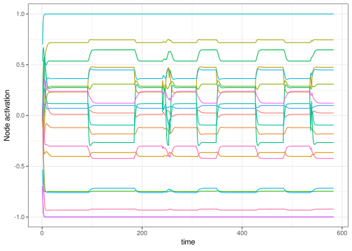
Numerous nodes within the system exhibit a consistent equilibrium state. The challenge arises when the output layer attempts to extract knowledge from these nodes, as they do not convey meaningful information. This issue can be attributed to the disparate scales of the features. To address this concern, a practical approach involves normalizing the features by dividing each of them by their respective maximum values, thereby scaling them within the range of -1 to 1 by dividing by the maximum of the absolute value. Of note, here the features will be scaled between 0 and 1 because all features are positive.
Hide/Show the code
# Standardise features by dividing by the maximum value can improve performance
# After standardisation, all features are on a similar scale which helps RC
stand_max <- function(x) return(x/max(abs(x)))
# scaled features
Xstand <- dfOutcome %>%
filter(date < traintest_date) %>%
select(hosp, Positive, Tested) %>%
mutate_all(.funs = stand_max) %>%
as.matrix() %>%
as.array()We then feed them to the reservoir and plot the node activation again. Compared to Figure 4, the obtained node activation at Figure 5 shows interesting trend outputs as no node seems saturated.
Hide/Show the code
# feed the scaled features to the reservoir
reservoir_state_stand <- predict_seq(node = reservoir,
X = Xstand,
reset = TRUE)
# plot the output
plot(reservoir_state_stand)
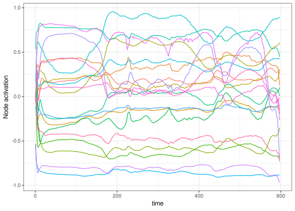
3.3.3 Forecast
In order to train the reservoir, we should train the last layer which linearly combines the neuron’s output.
3.3.3.1 Set the ESN
Initially, we establish the output layer, incorporating a ridge penalty set at 1e3. It’s important to note that this hyperparameter can be subject to optimization, a topic that will be explored in Section 4. This parameter plays a pivotal role in fine-tuning the model’s conformity to the data. When set excessively high, the risk of underfitting arises, whereas setting it too low can lead to overfitting. We connect the output layer to the reservoir making the model ready to be trained.
Hide/Show the code
readout <- reservoirnet::createNode(nodeType = "Ridge",
ridge = 1e3)
# Create a readout node using ridge regression with the 'createNode' function from the reservoirnet package.
# Arguments:
# - nodeType = "Ridge": Specify the type of node to be a ridge regression readout.
# - ridge = 1e3: Set the regularization parameter (ridge) for the ridge regression to 1000.
# Ridge regression is used to prevent overfitting by adding a penalty on the size of the coefficients.
model <- reservoirnet::link(reservoir, readout)
# Link the reservoir and readout nodes to form a complete reservoir computing model.
# The 'link' function connects the high-dimensional state generated by the reservoir to the readout layer,
# allowing the model to learn the mapping from the reservoir states to the target outputs.3.3.3.2 Set the data
First we separate the train set on which we will learn the ridge coefficients and the test set on which we will make the forecast. We define the train set to be all the data before 2022-01-01 and the test data to be all the data to have forecast both on train and test sets.
Hide/Show the code
# Perform some data management to isolate train and test sets
# train set
dftrain <- dfOutcome %>% filter(outcomeDate <= traintest_date)
yTrain <- dftrain %>% select(outcome)
yTrain_variation <- dftrain %>% select(outcome_deriv)
xTrain <- dftrain %>% select(hosp, Positive, Tested)
# test set
xTest <- dfOutcome %>% select(hosp, Positive, Tested)We standardize with the same formula as seen before. We learn the standardization on the training set and apply it on the test set. Then we convert the dataframe to matrix.
Hide/Show the code
# copy train and test sets
xTrainstand <- xTrain
xTeststand <- xTest
# standardise based on training set values
ls_fct_stand <- apply(xTrain,
MARGIN = 2,
FUN = function(x) function(feature) return(feature/(max(x))))
lapply(X = names(ls_fct_stand),
FUN = function(x){
xTrainstand[,x] <<- ls_fct_stand[[x]](feature = xTrain[,x])
xTeststand[,x] <<- ls_fct_stand[[x]](feature = xTest[,x])
return()
})
# convert to array
lsdf <- lapply(list(yTrain = yTrain,
yTrain_variation = yTrain_variation,
xTrain = xTrainstand,
xTest = xTeststand),
function(x) as.matrix(x))3.3.3.3 Train the model and predict
We then feed the reservoir with the train set. To do so, we set a warmup of 30 days during which the data are propagating into the reservoir but not used to fit the output layer.
Hide/Show the code
### train the reservoir ridge output
fit <- reservoirnet::reservoirR_fit(node = model,
X = lsdf$xTrain,
Y = lsdf$yTrain,
warmup = 30,
reset = TRUE)Fitting node Ridge-0...Now that the ridge layer is trained, we can forecast. We set the parameter reset to TRUE in order to clean the reservoir from the data used by the training set.
Hide/Show the code
# Forecast with the trained reservoir on the test data
vec_pred <- reservoirnet::predict_seq(node = fit$fit,
X = lsdf$xTest,
reset = TRUE)Hide/Show the code
# Make figure to represent forecast on the train and test sets.
dfOutcome %>%
mutate(pred = vec_pred) %>%
na.omit() %>%
ggplot(mapping = aes(x = outcomeDate)) +
geom_line(mapping = aes(y = outcome,
color = "observed")) +
geom_line(mapping = aes(y = pred,
color = "forecast")) +
annotate("rect",
xmin = traintest_date,
xmax = max(dfOutcome$outcomeDate, na.rm = T),
ymin = 0,
ymax = max(dfOutcome$outcome, na.rm = T)*1.1,
alpha = .2) +
annotate("text", label = "Test set", x = as.Date("2022-08-01"), y = 2200, size = 7) +
annotate("text", label = "Train set", x = as.Date("2021-03-01"), y = 2200, size = 7) +
scale_color_manual(values = c("#3772ff", "#080708")) +
theme_minimal() +
labs(color = "", x = "Date", y = "Hospitalizations")
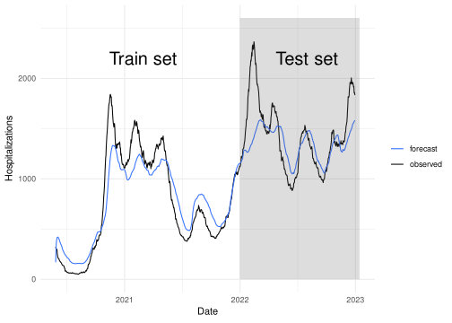
We observe that the model forecast at Figure 6 is not fully accurate, both on the test set and the train set. In that case, one option could be to reduce ridge penalization to fit more closely the data, the optimization of ridge hyperparameter will be discussed at Section 4. Another possibility is to ease the learning of the algorithm by forecasting the variation of the hospitalization instead of the number of hospitalized patients. For that step, we will learn on the outcome_deriv contained in yTrain_variation data which is defined outcome as outcome_deriv = outcome - hosp. As depicted at Figure 7, this strategy improved the model forecast.
Hide/Show the code
## Fit reservoir on outcome variation instead of raw outcome
fit2 <- reservoirnet::reservoirR_fit(node = model,
X = lsdf$xTrain,
Y = lsdf$yTrain_variation,
warmup = 30,
reset = TRUE)Fitting node Ridge-0...Hide/Show the code
## Get the forecast on the test set
vec_pred2_variation <- reservoirnet::predict_seq(node = fit2$fit,
X = lsdf$xTest,
reset = TRUE)
## Transform the outcome variation forecast into hospitalization forecast
vec_pred2 <- vec_pred2_variation + xTest$hosp
## Plot the results
dfOutcome %>%
mutate(Raw = vec_pred,
Variation = vec_pred2) %>%
tidyr::pivot_longer(cols = c(Raw, Variation),
names_to = "Outcome_type",
values_to = "Forecast") %>%
na.omit() %>%
ggplot(mapping = aes(x = outcomeDate)) +
geom_line(mapping = aes(y = outcome,
color = "observed")) +
geom_line(mapping = aes(y = Forecast,
color = "Forecast")) +
annotate("rect",
xmin = traintest_date,
xmax = max(dfOutcome$outcomeDate, na.rm = T),
ymin = 0,
ymax = max(dfOutcome$outcome, na.rm = T)*1.1,
alpha = .2) +
annotate("text", label = "Test set", x = as.Date("2022-08-01"), y = 2200, size = 5) +
annotate("text", label = "Train set", x = as.Date("2021-03-01"), y = 2200, size = 5) +
facet_wrap(Outcome_type ~ .,
labeller = label_bquote(cols = "Outcome" : .(Outcome_type))) +
scale_color_manual(values = c("#3772ff", "#080708")) +
theme_minimal() +
theme(legend.position = "bottom") +
labs(color = "", x = "Date", y = "Hospitalizations")
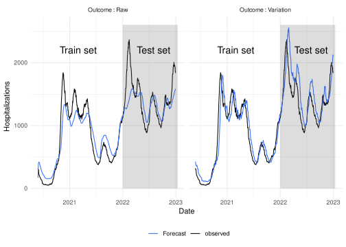
3.4 Classification
3.4.1 The Japanese vowel dataset
This example is largely inspired from the classification tutorial of reservoirpy. To illustrate the classification task, we will use the Japanese vowel dataset (Kudo, Toyama, and Shimbo (1999)). The data can be loaded from reservoirnet as follow :
Hide/Show the code
# Get the Japanese vowels dataset using the 'generate_data' function from the reservoirnet package.
# The dataset contains preprocessed features and labels for classification.
# Then we isolate train and test sets
japanese_vowels <- reservoirnet::generate_data(dataset = "japanese_vowels")[[1]]
X_train <- japanese_vowels$X_train
Y_train <- japanese_vowels$Y_train
X_test <- japanese_vowels$X_test
Y_test <- japanese_vowels$Y_testThe dataset comprises 640 vocalizations of the Japanese vowel , contributed by nine distinct speakers. Each vocalization represents a time series spanning between 7 and 29 time steps, encoded as a 12-dimensional vector denoting the Linear Prediction Coefficients (LPC). A visual representation of six distinct utterances from the test set, originating from three different speakers, is depicted in Figure 8.
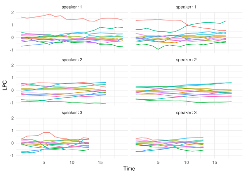
The primary objective involves the attribution of each utterance to its respective speaker, this is denoted as classification or sequence-to-vector encoding. The secondary objective involves the attribution of each time step of each utterance to its speaker, this is denoted as transduction or sequence-to-sequence encoding.
3.4.2 Classification (sequence-to-vector model)
The first approach is the sequence-to-vector encoding. For this task we aim to predict the speaker of the whole utterance (i.e the label is assigned to the whole sequence). We first start by creating the reservoir and the output layer.
Hide/Show the code
reservoir <- reservoirnet::createNode("Reservoir", units = 500,
lr=0.1, sr=0.9,
seed = 1)
# Create a reservoir computing node with 500 units using the 'createNode' function from the reservoirnet package.
# Arguments:
# - units = 500: Set the number of reservoir units (neurons) to 500.
# - lr = 0.1: Set the leakage rate (lr) of the reservoir to 0.1, controlling how quickly the reservoir state decays over time.
# - sr = 0.9: Set the spectral radius (sr) of the reservoir to 0.9, influencing the stability and memory capacity of the reservoir.
# - seed = 1: Set the seed for reproducibility, ensuring consistent results when the model is run multiple times.
readout <- reservoirnet::createNode("Ridge",ridge=1e-6)
# Create a readout node using ridge regression with the 'createNode' function from the reservoirnet package.
# Arguments:
# - ridge = 1e-6: Set the regularization parameter (ridge) for the ridge regression to 1e-6.
# Ridge regression is used to prevent overfitting by adding a penalty on the size of the coefficients.To perform this task, we need to modify the training and testing processes. Leveraging the inherent inertia of the reservoir, information from preceding time steps is preserved, effectively endowing the RC with a form of memory. Consequently, the final state vector encapsulates insights gathered from all antecedent states. In the context of the sequence-to-vector encoding task, only this ultimate state is employed. This process is executed as follows:
Hide/Show the code
states_train = list()
k <- 1
for (x in X_train) {
# Loop over each training sample in X_train.
states <- reservoirnet::predict_seq(node = reservoir, X = x,
reset=TRUE)
# Generate the reservoir states for the current training sample using the 'predict_seq' function.
states_train[[k]] <- t(as.matrix(states[nrow(states),]))
# Extract the final reservoir state for the current sample and store it in 'states_train'.
k <- k+1
}Then we can train the readout based on this last state vector. In that case, Y_train contains a single label for each utterance.
Hide/Show the code
# Fit the reservoir using the last state vector (each observation is the whole vowel sequence)
res <- reservoirnet::reservoirR_fit(readout,X = states_train, Y = Y_train)The prediction is also modified using only the final state :
Hide/Show the code
# The operation is repeated for the test set :
# - the last state vector is extracted for each utterance
# - the model is used to forecast the utterance from this last state vector
Y_pred <- list()
k <- 1
for (x in X_test) {
states <- reservoirnet::predict_seq(node = reservoir, X = x,
reset=TRUE)
y <- reservoirnet::predict_seq(node = readout,
X = as.array(states[nrow(states),]))
Y_pred[[k]] <- y
k <- k+1
}Figure 9 shows the prediction for the 6 utterances depicted at Figure 8 where the model correctly identifies the speaker.
Hide/Show the code
# A figure represents the performance on the test set
dfplotseqtovec <- lapply(vec_sample,
FUN = function(i){
speaker <- which(Y_test[[i]][1,] == 1)
Y_pred[[i]] %>%
as.data.frame() %>%
tidyr::pivot_longer(cols = everything(),
names_to = "pred_speaker",
values_to = "prediction") %>%
mutate(pred_speaker = gsub(x = pred_speaker,
pattern = "V", "")) %>%
mutate(speaker = speaker, .before = 1,
uterrance = i,
target = speaker == pred_speaker) %>%
return()
}) %>%
bind_rows()
ggplot(dfplotseqtovec,
mapping = aes(x = pred_speaker,
y = prediction,
fill = target)) +
geom_bar(stat = "identity") +
facet_wrap(uterrance ~ speaker,
labeller = label_bquote(cols = "speaker" : .(speaker)),
ncol = 2) +
scale_fill_manual(values = c("#BDBDBD", "#A3CEF1")) +
theme_minimal() +
theme(legend.position = "none") +
labs(y = 'Score',
x = "Speaker")
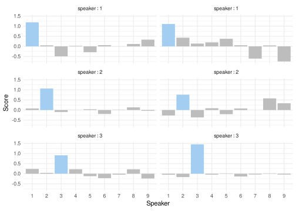
Then, we can also compute the overall accuracy :
Hide/Show the code
# The overall accuracy is evaluated
accuracy <- function(pred, truth) mean(pred == truth)
Y_pred_class <- sapply(Y_pred,
FUN = function(x) apply(as.matrix(x),1,which.max))
Y_test_class <- sapply(Y_test,
FUN = function(x) apply(as.matrix(x),1,which.max))
score <- accuracy(pred = Y_test_class, truth = Y_pred_class)
print(paste0("Accuracy: ", round(score * 100,3) ,"%"))[1] "Accuracy: 92.703%"3.4.3 Transduction (sequence-to-sequence model)
For this task, the goal is to predict the speaker for each time step of each utterance. The first step is to get the data where the label is repeated for each time step. This is easily done with the repeat_targets argument as follow :
Hide/Show the code
# For this new task where we want to forecast for each time step (instead of each utterance)
# we start by getting the data in the appropriate format
# Then we split the train and test data
japanese_vowels <- reservoirnet::generate_data(
dataset = "japanese_vowels",
repeat_targets=TRUE)$japanese_vowels
X_train <- japanese_vowels$X_train
Y_train <- japanese_vowels$Y_train
X_test <- japanese_vowels$X_test
Y_test <- japanese_vowels$Y_testThen we can train a simple Echo State Network to solve this task. For this example we will connect both the input layer and the reservoir layer to the readout layer which is performed by the %>>% operator :
Hide/Show the code
# Create an input, a reservoir and an output layers
source <- createNode("Input")
readout <- createNode("Ridge",ridge=1e-6)
reservoir <- createNode("Reservoir",units = 500,lr=0.1, sr=0.9, seed = 1)
# Connect the input layer to the reservoir and connect both the input layer and the reservoir to the output layer
model <- list(source %>>% reservoir, source) %>>% readoutWe can then fit the model and predict the labels for the test data. The reset parameter is set to TRUE to remove information from the reservoir from the training process.
Hide/Show the code
# Fit the RC model
model_fit <- reservoirnet::reservoirR_fit(node = model,
X = X_train,
Y = Y_train,
warmup = 2)Fitting node Ridge-2...Hide/Show the code
# Predict with the fitted model
Y_pred <- reservoirnet::predict_seq(node = model_fit$fit,
X = X_test,
reset = TRUE)From the Y_pred and Y_test we represent at Figure 10 the predictions for the same patients as in Figure 8.
Hide/Show the code
# Make a graph with a label for each time of each utterance
dfplotseqtoseq <- lapply(vec_sample,
FUN = function(i){
speaker <- which(Y_test[[i]][1,] == 1)
Y_pred[[i]] %>%
as.data.frame() %>%
tibble::rowid_to_column(var = "Time") %>%
tidyr::pivot_longer(cols = -Time,
names_to = "pred_speaker",
values_to = "prediction") %>%
mutate(pred_speaker = gsub(x = pred_speaker,
pattern = "V", ""),
speaker = speaker,
uterrance = i,
.before = 1) %>%
return()
}) %>%
bind_rows()
ggplot(dfplotseqtoseq, mapping = aes(x = Time,
y = pred_speaker,
fill = prediction)) +
geom_tile() +
facet_wrap(uterrance ~ speaker,
labeller = label_bquote(cols = "speaker" : .(speaker)),
ncol = 2) +
scale_fill_gradient2(low = "#8ECAE6", high = "#FB8500", mid = "#023047",
midpoint = 0) +
theme_minimal() +
labs(y = 'Predicted speaker',
fill = "Prediction score")
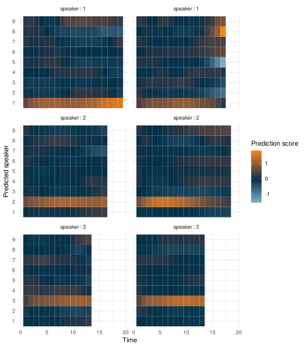
For those 6 utterances, the model correctly identify the speaker for most of the time steps. We can then evaluate the overall accuracy of the model :
Hide/Show the code
# Compute the accuracy
Y_pred_class <- sapply(Y_pred, FUN = function(x) apply(as.matrix(x),
1,
which.max))
Y_test_class <- sapply(Y_test, FUN = function(x) apply(as.matrix(x),
1,
which.max))
score <- accuracy(array(unlist(Y_pred_class)), array(unlist(Y_test_class)))
print(paste0("Accuracy: ", round(score * 100,3) ,"%"))[1] "Accuracy: 92.456%"4 Avanced case-study: Covid-19 hospitalizations forecast
4.1 Introduction
Since late 2020, millions of cases of SARS-CoV-2 infection have been documented across the globe Carrat et al. (2021). This ongoing pandemic has exerted significant strain on healthcare systems, resulting in a surge in hospitalizations. This surge, in turn, necessitated modifications to the healthcare infrastructure and gave rise to population-wide lockdown measures aimed at preventing the saturation of healthcare facilities Kim et al. (2020). The capacity to predict the trajectory of the epidemic on a regional scale is of paramount importance for effective healthcare system management.
Numerous COVID-19 forecasting algorithms have been proposed using different methods (e.g ensemble, deep learning, compartmental), yet none has proven entirely satisfactory Rahimi, Chen, and Gandomi (2021). In France, short-term forecasts with different methods have been evaluated with similar results Pottier (2021). In this context a machine learning algorithm based on linear regression with elastic-net penalization, leveraging both Electronic Health Records (EHRs) and public data, was implemented at Bordeaux University Hospital (Ferté et al. 2022). This model, which aimed at forecasting the number of hospitalized patients at 14 days, showed good performance but struggled to accurately anticipate dynamic shifts of the epidemic.
RC has been used in the context of covid-19 epidemic forecast Ghosh et al. (2021). Among them, Ghosh et al. (2021), Liu et al. (2023) and Ray, Chakraborty, and Ghosh (2021) used it to forecast epidemic, Zhang et al. (2023) performed sentiment analysis and Kmet and Kmetova (2019) used it to solve optimal control related to vaccine. The evaluation of RC for epidemic forecast showed promising results in all approaches, being competitive with Long-Short Term Memory (LSTM) and Feed-Forward Neural Network (FFNN) in Ray, Chakraborty, and Ghosh (2021). However, the test period was short for Ghosh et al. (2021)} (21 and 14 days) and Ray, Chakraborty, and Ghosh (2021) (86 days) making it difficult to evaluate the behavior of the methods during epidemic dynamic shift. This was not the case for Liu et al. (2023) (6 months) but they implemented daily ahead forecast which would be difficult to use to manage a hospital. Finally, all three implementations used only one time series as input whereas it has been shown that using different data sources could improve forecast Ferté et al. (2022). Therefore, it is still difficult to assess the usefulness of RC over a large period and using many time series as inputs.
RC can be viewed as an extension of penalized linear regression, where inputs undergo processing by a reservoir, introducing the capacity for memory and non-linear combinations. Given the effectiveness of penalized linear regression in COVID-19 forecasting, as highlighted in Ferté et al. (2022), and the promising results exhibited by RC in epidemic forecasting, as demonstrated in studies such as Ghosh et al. (2021), Liu et al. (2023), and Ray, Chakraborty, and Ghosh (2021), we have opted to employ RC for the prediction of hospitalizations at 14 days at the University Hospital of Bordeaux.
The primary aim of this study is to assess the performance of RC in this forecasting task. Secondary objectives include (i) comparing the performance of RC with that of elastic-net penalized regression (identified as the optimal model in Ferté et al. (2022)) and (ii) evaluating variations in RC performance based on different architectural choices, such as the connection between the input layer and the output layer, and the use of one input scaling per feature versus a common input scaling.
4.2 Methods
4.2.1 Data
The study utilized aggregated data spanning from May 16, 2020, to January 17, 2022, regarding the COVID-19 epidemic in France, drawing from various sources to enhance forecasting accuracy. These sources encompassed epidemiological statistics from Santé Publique France, weather data from the National Oceanic and Atmospheric Administration (NOAA), both providing department-level data Etalab (2020) and Electronic Health Record (EHR) data from the Bordeaux Hospital providing hospital-level data. All data were daily updated. Santé Publique France data included information on hospitalizations, RT-PCR tests, positive RT-PCR results, variant prevalence, and vaccination data, categorized by age groups. NOAA data contributed temperature, wind speed, humidity, and dew point data, allowing for the computation of the COVID-19 Climate Transmissibility Predict Index (Roumagnac et al. 2021). EHRs data included hospitalizations, ICU admissions, ambulance service records, and emergency unit notes, with relevant COVID-19-related concepts extracted from the notes. Data are discussed more in depth in Ferté et al. (2022).
First derivative over the last 7 days were computed to enrich model information. To take into account measurement error and daily noise variation, data were smoothed using a local polynomial regression with a span of 21 days. As previously described, input features were scaled between -1 and 1 by dividing the observed value by the maximum of the absolute value of the given input feature.
All data are publicly available. Weather data can be obtained from Smith, Lott, and Vose (2011) using R package worldmet (Carslaw 2023). Vaccine data can be downloaded from Etalab (2020). EHRs data can be downloaded on dryad (Ferté et al. 2023). For privacy issues, publicly available EHRs data below 10 patients were obfuscated to 0. For convenience, all data were downloaded, merged and provided as replication material.
4.2.2 Evaluation framework
The task was to forecast 14 days ahead the number of hospitalized patients. As seen at Section 3.3, we will train the model to predict the variation of hospitalization, denoted as hosp, defined as outcome_{t+14} = hosp_{t+14} - hosp_{t}. Metrics computation and visualizations will be performed on the predicted number of hospitalizations denoted as \widehat{hosp_{t+14}} = \widehat{outcome_{t+14}} + hosp_{t}.
The dataset was separated into two periods. First period from May 16, 2020 to March 1, 2021 served to identify relevant hyperparameters. Remaining data was used to evaluate the model performance.
The performance of the model was evaluated according to several metrics:
- the mean absolute error : MAE = mean(|\widehat{hosp_{t+14}}-hosp_{t+14}|).
- the median relative error : MRE = median(|\frac{\widehat{hosp_{t+14}}-hosp_{t+14}}{hosp_{t+14}}|).
- the mean absolute error to baseline : MAEB = mean(|\widehat{hosp_{t+14}}-hosp_{t+14}| - |hosp_{t}-hosp_{t+14}|).
- the median relative error to baseline : MREB = median(|\frac{\widehat{hosp_{t+14}}-hosp_{t+14}}{hosp_{t}-hosp_{t+14}}|))
Median was chosen over mean for MRE and MREB because those metrics tend to have extremely high values when the denominator is close to 0 (i.e when the number of hospitalized patients is close to 0 or the number of patients hospitalized at 14 days is close to the current number of hospitalized patients respectively). MAEB and MREB compare model performance to a baseline model which predicts the current number of hospitalized patients at 14 days. Those metrics help to determine the information added by the model and is a good baseline as covid-19 forecast model do not always outperform this basic forecast (Cramer et al. (2022)).
Because the outcome is obfuscated below 10 hospitalizations for privacy reason, we set both the outcome and the forecast to 10 when the observed value was 0 or the forecasted value was below 10 when evaluating the model performance.
4.2.3 Models
We compared RC to elastic-net penalized regression (denoted as Enet). Furthermore we evaluated RC based on several architectures. First we compared RC with a single input scaling common to all features and a RC with on specific input scaling per feature. Second we compared RC where the input layer is connected to the output layer in addition to the connection between reservoir and output layer. Therefore, five models were evaluated :
- Elastic-net penalized regression denoted Enet
- RC with a single input scaling and no connection between input and ouput layers denoted Common IS R %>>% O
- RC with a single input scaling and connection between input and ouput layers denoted Common IS I+R %>>% O
- RC with multiple input scaling and no connection between input and ouput layers denoted Multiple IS R %>>% O
- RC with multiple input scaling and connection between input and ouput layers denoted Multiple IS I+R %>>% O
Because of the randomness of the reservoir, we took the median forecast of 10 reservoir on the train set to evaluate the performance of a given hyperparameter set. On the test set we aggregated the forecast of 40 reservoirs, each of them having one of the 40 best hyperparameter sets found on the train set. In addition, because covid-19 hospitalization is a non-stationary process, models were re-trained everyday using all previous days. To ease computation burden, only one day over two was used to find hyperparameters on the training set.
4.2.4 Hyperparameter optimisation using random search
RC relies mainly on 4 hyperparameters including the leaking rate (i.e “memory” parameter), spectral radius (i.e “chaoticity” parameter), input scaling (i.e “feature gain” parameter) and ridge (i.e penalization parameter). Input scaling can be either, common to all features or specific to each feature which increases the number of hyperparameter by the number of features.
Following the notation from glmnet package (Friedman, Hastie, and Tibshirani 2010), elastic-net penalized linear regression relies on two hyperparameters, lambda (i.e the penalization parameter) and alpha (i.e the compromise between lasso and ridge penalty)
Hyperparameter were selected in the training set (i.e before March 1, 2021) using a wrapper approach and a random search sampler using 2000 samples for each model. The sampling distribution were defined as follow :
- (RC) ridge and (Enet) lambda : log-uniform law defined between 1e-10 and 1e5
- (RC) input scaling and spectral radius : log-uniform law defined between 1e-5 and 1e5
- (RC) leaking rate : log-uniform law defined between 1e-3 and 1
- (Enet) alpha : uniform defined between 0 and 1
We provided large search space for all hyper-parameters. Search space was slightly reduced for leaking rate based on previous results and because a leaking rate of 1e-3 already imply that new inputs make the reservoir change really slowly which is not inline with the dynamic of covid-19 but would be appropriate for an application where the phenomena to forecast has a slow dynamic.
Finally, we provided an additional Enet model similar to the one in Ferté et al. (2022) where alpha was set to 0.5 and lambda was re-evaluated everyday in the test set based on previous data using the cross-validation procedure provided by glmnet.
4.3 Results
The goal of this task is to predict 14 days ahead the hospitalization. Figure Figure 11 shows both the training set (i.e before 2021-03-01) and the test set where the blue curve correspond to the input features (first derivatives are not shown) and the orange curves correspond to the outcome the model is trained on (i.e the hospitalization variation) and the hospitalizations at 14 days on which the performance metrics are computed. The figures outline that the relation between the input features and the outcome evolve over time and that the time series is not stationary. For instance IPTCC (Index PREDICT de Transmissivité Climatique de la COVID-19) seems correlated to the outcome except that it completely miss the summer 2021 increase.
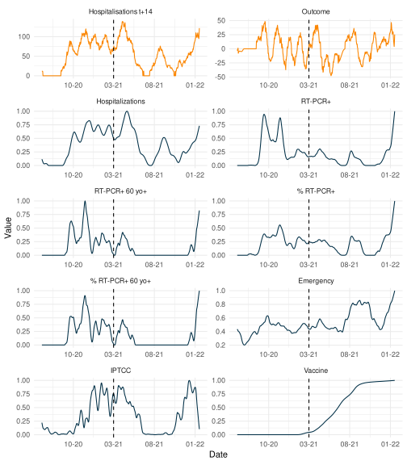
4.3.1 Hyperparameter selection
Figure Figure 12 shows the hyperparameter optimisation using random search for the different RC architectures. We observe that model with multiple input scaling achieved better performance on the train set compared to model with single input scaling which is expected as they can adapt more closely to the data thanks to specific input scaling for each feature.
As expected, we observe that the optimal leaking rate is above 1e-2 for all RC which is coherent with the short term dynamic of covid-19 epidemic. Trend for other hyperparameter are less clear even though best hyperparameter sets were close for RC with common input scaling and for RC with multiple input scaling.

Figure Figure 13 shows the hyperparameter search for RC with multiple input scaling and connected input layer. We observe that the random search tend to favor high importance given to derivative of positive RT-PCR (including the elderly) and the derivative of IPTCC. The rest of the feature do not show clear pattern.

4.3.2 Forecast performance
| Model Performance | ||||
|---|---|---|---|---|
| Model | MAE | MRE | MAEB | MREB |
| Common IS R %>>% O | 15.23 | 0.26 | −3.50 | 0.85 |
| Common IS I + R %>>% O | 14.84 | 0.26 | −3.89 | 0.83 |
| Multiple IS R %>>% O | 15.38 | 0.28 | −3.35 | 0.82 |
| Multiple IS I + R %>>% O | 15.25 | 0.28 | −3.49 | 0.83 |
| Elastic-net | 16.40 | 0.29 | −2.34 | 0.93 |
Table 1 shows the performance on the test set. Best model according to all metrics was RC with common input scaling and connection between input and output layers. Having one input scaling per feature did not improve the model which might be due to low generalisability of the hyperparameter of the training set to the test set due to non-stationarity. Additionaly, connecting input layer to output layer improved the model forecast. All RC models performed better than the elastic-net model.
Figure 14 shows the forecast of the different models. We note that models struggle to accurately forecast slope shifts. For instance, summer 2021 initial increase is partially predicted by all models but its decrease is not well predicted. Winter 2021 increase is anticipated by all models but they tend to overestimate it because of the rise of vaccine effect.
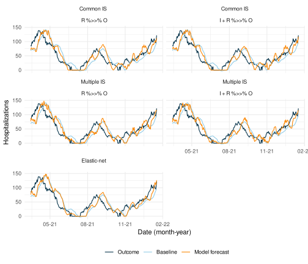
4.3.3 Number of model to aggregate
Figure 15 show the individual forecast for the 40 best sets of hyperparameters of each RC architecture. Due to the internal random connection of the reservoir, we observe forecast stochasticity and relying on only one forecast is unreliable. We explored the number of model needed at Figure 16 which shows that after 10 models, forecast is stable and even 5 models for the simpler model with common input scaling which rely on less hyperparamters.

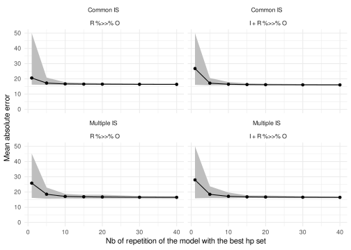
4.3.4 Input feature importance
We compared the coefficients of the output layer estimated for the input layer and the reservoir nodes. Additionally, we compared the coefficient given to the input layer by the output layer in the reservoir and the coefficient estimated by the elastic-net model.
Figure 17 illustrates the ranking of input layer compared to all connections to the output layer, including the 500 reservoir nodes and the 16 features of the input layer (excluding bias). The figure shows that the model with common input scaling tends to assign less weight to input layer compared to the model with multiple input scaling. This suggests that the reservoir with common input scaling provides more information than the reservoir with multiple input scaling, which aligns with its better performance, as shown in Table Table 1.

Furthermore, Figure 18 compares the coefficients assigned to input features by the elastic-net model and the RC models. While the coefficients are generally consistent across RC models, there are some notable differences with elastic-net. Specifically, certain features deemed important by the elastic-net model, such as the derivative of RT-PCR, and the derivative of Vaccine, are less important for the reservoir computing model. This may indicate that these features predictive ability is better conveyed by their relationship with other features, which is captured by the reservoir computing model but might not be by the elastic-net model. Conversely, emergency, IPTCC, proportion of positive RT-PCR, and hospitalizations are more important for the reservoir computing model than for the elastic-net model.
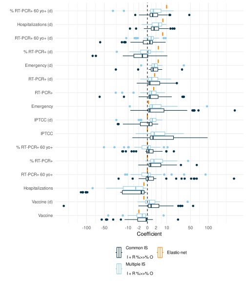
4.4 Discussion
In this specific application, we have demonstrated that RC exhibits commendable performance in comparison to Elastic-net, which serves as the reference model. Furthermore, we highlight the inherent challenges in forecasting within this context, primarily stemming from the non-stationarity of the time series.
All computations in this study were conducted using the reservoirnet package, and the entire codebase is accessible on Zenodo (Ferté et al. 2024). This R package demonstrates its efficacy in implementing various reservoir architectures, including connection between the input layer and the output layer, as well as the utilization of several input scaling, all within the context of a real-world use case.
Given the substantial number of hyperparameters involved, we acknowledge that random search may not be the most efficient optimization algorithm. We have retained this approach for the sake of simplicity in this tutorial paper; however, meta-heuristic approaches, particularly those utilizing evolutionary algorithms, may prove more efficient, especially when employing multiple input scaling (Bala et al. 2018).
This study represents a novel contribution to epidemic forecasting utilizing RC. Notably, previous literature predominantly focused on simpler problems characterized by fewer input features or shorter evaluation periods Ghosh et al. (2021). Our findings underscore the potential of this approach for future epidemics, suggesting its potential to surpass more traditional epidemiological tools while maintaining a lightweight model structure compared to other RNNs.
It is worth noting that all models, including the Ferté et al. (2022) models, encounter challenges in accurately anticipating slope shifts, indicating the need for further investigation. Specifically, additional work is warranted to extend the application of RC to high-dimensional settings, building upon the insights gained from models based on a more extensive set of features.
5 Discussion and conclusion
In this paper, we introduce the R package reservoirnet, which serves as a versatile tool for implementing reservoir computing based on ReservoirPy’s Python library. It offers flexibility in defining the reservoir architecture, including options for specifying connections between the input layer and the output layer, as well as variations in input scaling as demonstrated on a real-world use case.
We provided a comprehensive overview of the basic usage of the reservoirnet package through illustrative examples in regression and classification tasks. This introductory section serves as a foundation for R users, offering step-by-step guidance on constructing and training reservoir computing models using the package. By demonstrating the application of RC in both regression and classification scenarios, we aim to equip users with the essential knowledge and skills needed to harness the capabilities of reservoir computing for diverse tasks.
Drawing on the robust foundation of the ReservoirPy structure, a well-maintained Python library, this package inherits its reliability and longevity. We have focused on providing access to the fundamental features, building upon the strong base provided by ReservoirPy. Therefore, this initial version of reservoirnet must evolve in tandem with the growing understanding and adoption of RC within the R community.
References
Bala, Abubakar, Idris Ismail, Rosdiazli Ibrahim, and Sadiq M. Sait. 2018. “Applications of Metaheuristics in Reservoir Computing Techniques: A Review.” IEEE Access 6: 58012–29. https://doi.org/10.1109/ACCESS.2018.2873770.
Carrat, Fabrice, Julie Figoni, Joseph Henny, Jean-Claude Desenclos, Sofiane Kab, Xavier de Lamballerie, and Marie Zins. 2021. “Evidence of Early Circulation of SARS-CoV-2 in France: Findings from the Population-Based ‘CONSTANCES’ Cohort.” European Journal of Epidemiology, February, 1–4. https://doi.org/10.1007/s10654-020-00716-2.
Carslaw, David. 2023. “Worldmet: Import Surface Meteorological Data from NOAA Integrated Surface Database (ISD).” https://cran.r-project.org/web/packages/worldmet/index.html.
Carvalho, Kathleen, João Paulo Vicente, Mihajlo Jakovljevic, and João Paulo Ramos Teixeira. 2021. “Analysis and Forecasting Incidence, Intensive Care Unit Admissions, and Projected Mortality Attributable to COVID-19 in Portugal, the UK, Germany, Italy, and France: Predictions for 4 Weeks Ahead.” Bioengineering 8 (6): 84. https://doi.org/10.3390/bioengineering8060084.
Cramer, Estee Y., Evan L. Ray, Velma K. Lopez, Johannes Bracher, Andrea Brennen, and et al. 2022. “Evaluation of Individual and Ensemble Probabilistic Forecasts of COVID-19 Mortality in the United States.” Proceedings of the National Academy of Sciences 119 (15): e2113561119. https://doi.org/10.1073/pnas.2113561119.
Etalab. 2020. “Les Données Relatives Au COVID-19 En France - Data.gouv.fr.” https://www.data.gouv.fr/fr/pages/donnees-coronavirus/.
Ferté, Thomas, Kalidou Ba, Dan Dutartre, Pierrick Legrand, Vianney Jouhet, Romain Griffier, Rodolphe Thiébaut, Xavier Hinaut, and Boris P. Hejblum. 2024. “Thomasferte/Jss_reservoirnet: First Release.” Zenodo. https://doi.org/10.5281/ZENODO.11281341.
Ferté, Thomas, Vianney Jouhet, Romain Griffier, Boris P. Hejblum, Rodolphe Thiébaut, and Bordeaux University Hospital Covid-19 Crisis Task Force. 2022. “The Benefit of Augmenting Open Data with Clinical Data-Warehouse EHR for Forecasting SARS-CoV-2 Hospitalizations in Bordeaux Area, France.” JAMIA Open 5 (4): ooac086. https://doi.org/10.1093/jamiaopen/ooac086.
Ferté, Thomas, Vianney Jouhet, Romain Griffier, Boris Hejblum, Rodolphe Thiébaut, and Bordeaux University Hospital Covid-19 Crisis Task Force. 2023. “The Benefit of Augmenting Open Data with Clinical Data-Warehouse EHR for Forecasting SARS-CoV-2 Hospitalizations in Bordeaux Area, France.” Dryad. https://doi.org/10.5061/DRYAD.HHMGQNKKX.
Friedman, Jerome, Trevor Hastie, and Rob Tibshirani. 2010. “Regularization Paths for Generalized Linear Models via Coordinate Descent.” Journal of Statistical Software 33 (1): 1–22.
Ghosh, Subrata, Abhishek Senapati, Arindam Mishra, Joydev Chattopadhyay, Syamal K. Dana, Chittaranjan Hens, and Dibakar Ghosh. 2021. “Reservoir Computing on Epidemic Spreading: A Case Study on COVID-19 Cases.” Physical Review E 104 (1): 014308. https://doi.org/10.1103/PhysRevE.104.014308.
Hinaut, Xavier, and Peter Ford Dominey. 2013. “Real-Time Parallel Processing of Grammatical Structure in the Fronto-Striatal System: A Recurrent Network Simulation Study Using Reservoir Computing.” PLOS ONE 8 (2): e52946. https://doi.org/10.1371/journal.pone.0052946.
Hübner, Martin, Tobias Zingg, David Martin, Philippe Eckert, and Nicolas Demartines. 2020. “Surgery for Non-Covid-19 Patients During the Pandemic.” PLoS ONE 15 (10): e0241331. https://doi.org/10.1371/journal.pone.0241331.
Jaeger, Herbert. 2001. “The" Echo State" Approach to Analysing and Training Recurrent Neural Networks-with an Erratum Note’.” Bonn, Germany: German National Research Center for Information Technology GMD Technical Report 148 (January).
Kim, Gina, Mengru Wang, Hanh Pan, Giana H. Davidson, Alison C. Roxby, Jen Neukirch, Danna Lei, Elicia Hawken-Dennis, Louise Simpson, and Thuan D. Ong. 2020. “A Health System Response to COVID-19 in Long-Term Care and Post-Acute Care: A Three-Phase Approach.” Journal of the American Geriatrics Society 68 (6): 1155–61. https://doi.org/10.1111/jgs.16513.
Kmet, Tibor, and Maria Kmetova. 2019. “Bézier Curve Parametrisation and Echo State Network Methods for Solving Optimal Control Problems of SIR Model.” Biosystems 186 (December): 104029. https://doi.org/10.1016/j.biosystems.2019.104029.
Kudo, Mineichi, Jun Toyama, and Masaru Shimbo. 1999. “Multidimensional Curve Classification Using Passing-Through Regions.” Pattern Recognition Letters 20 (11): 1103–11. https://doi.org/10.1016/S0167-8655(99)00077-X.
Liu, Bocheng, Yiyuan Xie, Weichen Liu, Xiao Jiang, Yichen Ye, Tingting Song, Junxiong Chai, Manying Feng, and Haodong Yuan. 2023. “Nanophotonic Reservoir Computing for COVID-19 Pandemic Forecasting.” Nonlinear Dynamics 111 (7): 6895–6914. https://doi.org/10.1007/s11071-022-08190-z.
Lukoševičius, Mantas, and Herbert Jaeger. 2009. “Reservoir Computing Approaches to Recurrent Neural Network Training.” Computer Science Review 3 (3): 127–49. https://doi.org/10.1016/j.cosrev.2009.03.005.
Maass, Wolfgang, Thomas Natschläger, and Henry Markram. 2002. “Real-Time Computing Without Stable States: A New Framework for Neural Computation Based on Perturbations.” Neural Computation 14 (11): 2531–60. https://doi.org/10.1162/089976602760407955.
Martinuzzi, Francesco, Chris Rackauckas, Anas Abdelrehim, Miguel D. Mahecha, and Karin Mora. 2022. “ReservoirComputing.jl: An Efficient and Modular Library for Reservoir Computing Models.” Journal of Machine Learning Research 23 (288): 1–8. http://jmlr.org/papers/v23/22-0611.html.
Mohimont, Lucas, Amine Chemchem, François Alin, Michaël Krajecki, and Luiz Angelo Steffenel. 2021. “Convolutional Neural Networks and Temporal CNNs for COVID-19 Forecasting in France.” Applied Intelligence, April. https://doi.org/10.1007/s10489-021-02359-6.
Nakane, Ryosho, Gouhei Tanaka, and Akira Hirose. 2018. “Reservoir Computing With Spin Waves Excited in a Garnet Film.” IEEE Access PP (January): 1–1. https://doi.org/10.1109/ACCESS.2018.2794584.
Paireau, Juliette, Alessio Andronico, Nathanaël Hozé, Maylis Layan, Pascal Crépey, Alix Roumagnac, Marc Lavielle, Pierre-Yves Boëlle, and Simon Cauchemez. 2022. “An Ensemble Model Based on Early Predictors to Forecast COVID-19 Health Care Demand in France.” Proceedings of the National Academy of Sciences 119 (18): e2103302119. https://doi.org/10.1073/pnas.2103302119.
Penkovsky, Bogdan, Laurent Larger, and Daniel Brunner. 2018. “Efficient Design of Hardware-Enabled Reservoir Computing in FPGAs.” Journal of Applied Physics 124 (16): 162101. https://doi.org/10.1063/1.5039826.
Pottier, Loı̈c. 2021. “Forecast of the Covid19 Epidemic in France.” medRxiv. https://doi.org/10.1101/2021.04.13.21255418.
Prychynenko, Diana, Matthias Sitte, Kai Litzius, Benjamin Krüger, George Bourianoff, Mathias Kläui, Jairo Sinova, and Karin Everschor-Sitte. 2018. “Magnetic Skyrmion as a Nonlinear Resistive Element: A Potential Building Block for Reservoir Computing.” Physical Review Applied 9 (1): 014034. https://doi.org/10.1103/PhysRevApplied.9.014034.
Rafayelyan, Mushegh, Jonathan Dong, Yongqi Tan, Florent Krzakala, and Sylvain Gigan. 2020. “Large-Scale Optical Reservoir Computing for Spatiotemporal Chaotic Systems Prediction.” Physical Review X 10 (4): 041037. https://doi.org/10.1103/PhysRevX.10.041037.
Rahimi, Iman, Fang Chen, and Amir H. Gandomi. 2021. “A Review on COVID-19 Forecasting Models.” Neural Computing & Applications, February, 1–11. https://doi.org/10.1007/s00521-020-05626-8.
Ray, Arnob, Tanujit Chakraborty, and Dibakar Ghosh. 2021. “Optimized Ensemble Deep Learning Framework for Scalable Forecasting of Dynamics Containing Extreme Events.” Chaos (Woodbury, N.Y.) 31 (11): 111105. https://doi.org/10.1063/5.0074213.
Roumagnac, Alix, Eurico de Carvalho Filho, Raphaël Bertrand, Anne-Kim Banchereau, and Guillaume Lahache. 2021. “Étude de l’influence Potentielle de l’humidité Et de La Température Dans La Propagation de La Pandémie COVID-19.” Médecine de Catastrophe - Urgences Collectives, Douleur et situations d’exceptionPandémie COVID-19, 5 (1): 87–102. https://doi.org/10.1016/j.pxur.2021.01.002.
Simões, Jorge, João Paulo Moreira Magalhães, André Biscaia, António da Luz Pereira, Gonçalo Figueiredo Augusto, and Inês Fronteira. 2021. “Organisation of the State, Model of Health System and COVID‐19 Health Outcomes in Six European Countries, During the First Months of the COVID‐19 Epidemic in 2020.” The International Journal of Health Planning and Management, June, 10.1002/hpm.3271. https://doi.org/10.1002/hpm.3271.
Smith, Adam, Neal Lott, and Russ Vose. 2011. “The Integrated Surface Database: Recent Developments and Partnerships.” Bulletin of the American Meteorological Society 92 (6): 704–8. https://doi.org/10.1175/2011BAMS3015.1.
Tanaka, Gouhei, Toshiyuki Yamane, Jean Benoit Héroux, Ryosho Nakane, Naoki Kanazawa, Seiji Takeda, Hidetoshi Numata, Daiju Nakano, and Akira Hirose. 2019. “Recent Advances in Physical Reservoir Computing: A Review.” Neural Networks 115 (July): 100–123. https://doi.org/10.1016/j.neunet.2019.03.005.
Trouvain, Nathan, and Xavier Hinaut. 2021. “Canary Song Decoder: Transduction and Implicit Segmentation with ESNs and LTSMs.” In Artificial Neural Networks and Machine Learning – ICANN 2021, edited by Igor Farkaš, Paolo Masulli, Sebastian Otte, and Stefan Wermter, 71–82. Lecture Notes in Computer Science. Cham: Springer International Publishing. https://doi.org/10.1007/978-3-030-86383-8_6.
———. 2022. “Reservoirpy: A Simple and Flexible Reservoir Computing Tool in Python.” https://inria.hal.science/hal-03699931.
Trouvain, Nathan, Luca Pedrelli, Thanh Trung Dinh, and Xavier Hinaut. 2020. “ReservoirPy: An Efficient and User-Friendly Library to Design Echo State Networks.” In Artificial Neural Networks and Machine Learning – ICANN 2020, 494–505. Springer International Publishing. https://inria.hal.science/hal-02595026.
Trouvain, Nathan, Nicolas Rougier, and Xavier Hinaut. 2022. “Create Efficient and Complex Reservoir Computing Architectures with ReservoirPy.” In From Animals to Animats 16, edited by Lola Cañamero, Philippe Gaussier, Myra Wilson, Sofiane Boucenna, and Nicolas Cuperlier, 91–102. Lecture Notes in Computer Science. Cham: Springer International Publishing. https://doi.org/10.1007/978-3-031-16770-6_8.
Ushey, Kevin, JJ Allaire, and Yuan Tang. 2024. Reticulate: Interface to ’Python’. https://rstudio.github.io/reticulate/.
Vlachas, P. R., J. Pathak, B. R. Hunt, T. P. Sapsis, M. Girvan, E. Ott, and P. Koumoutsakos. 2020. “Backpropagation Algorithms and Reservoir Computing in Recurrent Neural Networks for the Forecasting of Complex Spatiotemporal Dynamics.” Neural Networks 126 (June): 191–217. https://doi.org/10.1016/j.neunet.2020.02.016.
Wickham, Hadley, Romain François, Lionel Henry, Kirill Müller, and Davis Vaughan. 2023. “dplyr: A Grammar of Data Manipulation.” https://CRAN.R-project.org/package=dplyr.
Wickham, Hadley, Danielle Navarro, and Thomas Lin Pedersen. 2018. ggplot2: Elegant Graphics for Data Analysis (3e). 3rd ed. Springer-Verlag New York. https://ggplot2-book.org/.
World Health Organisation. 2020. “WHO Coronavirus (COVID-19) Dashboard.” https://covid19.who.int.
Zhang, Qihuang, Grace Y. Yi, Li-Pang Chen, and Wenqing He. 2023. “Sentiment Analysis and Causal Learning of COVID-19 Tweets Prior to the Rollout of Vaccines.” PloS One 18 (2): e0277878. https://doi.org/10.1371/journal.pone.0277878.
Session information
Hide/Show the code
sessionInfo()R version 4.4.2 (2024-10-31)
Platform: x86_64-pc-linux-gnu
Running under: Ubuntu 20.04.6 LTS
Matrix products: default
BLAS: /usr/lib/x86_64-linux-gnu/blas/libblas.so.3.9.0
LAPACK: /usr/lib/x86_64-linux-gnu/lapack/liblapack.so.3.9.0
locale:
[1] LC_CTYPE=fr_FR.UTF-8 LC_NUMERIC=C
[3] LC_TIME=fr_FR.UTF-8 LC_COLLATE=fr_FR.UTF-8
[5] LC_MONETARY=fr_FR.UTF-8 LC_MESSAGES=fr_FR.UTF-8
[7] LC_PAPER=fr_FR.UTF-8 LC_NAME=C
[9] LC_ADDRESS=C LC_TELEPHONE=C
[11] LC_MEASUREMENT=fr_FR.UTF-8 LC_IDENTIFICATION=C
time zone: Europe/Paris
tzcode source: system (glibc)
attached base packages:
[1] stats graphics grDevices datasets utils methods base
other attached packages:
[1] reservoirnet_0.2.0 patchwork_1.3.0 ggplot2_3.5.1 dplyr_1.1.4
loaded via a namespace (and not attached):
[1] gt_0.11.1 sass_0.4.9 utf8_1.2.4 generics_0.1.3
[5] tidyr_1.3.1 renv_1.0.11 xml2_1.3.6 rstatix_0.7.2
[9] lattice_0.20-45 stringi_1.8.4 digest_0.6.37 magrittr_2.0.3
[13] evaluate_1.0.1 grid_4.4.2 timechange_0.3.0 fastmap_1.2.0
[17] rprojroot_2.0.4 Matrix_1.7-1 jsonlite_1.8.9 slider_0.3.2
[21] backports_1.5.0 brio_1.1.5 Formula_1.2-5 purrr_1.0.2
[25] fansi_1.0.6 scales_1.3.0 abind_1.4-8 cli_3.6.3
[29] rlang_1.1.4 munsell_0.5.1 withr_3.0.2 yaml_2.3.10
[33] tools_4.4.2 ggsignif_0.6.4 colorspace_2.1-1 ggpubr_0.6.0
[37] here_1.0.1 broom_1.0.7 reticulate_1.40.0 png_0.1-8
[41] vctrs_0.6.5 R6_2.5.1 lifecycle_1.0.4 lubridate_1.9.3
[45] snakecase_0.11.1 stringr_1.5.1 car_3.1-3 htmlwidgets_1.6.4
[49] janitor_2.2.0 warp_0.2.1 pkgconfig_2.0.3 pillar_1.9.0
[53] gtable_0.3.6 Rcpp_1.0.13-1 glue_1.8.0 xfun_0.49
[57] tibble_3.2.1 tidyselect_1.2.1 knitr_1.49 farver_2.1.2
[61] htmltools_0.5.8.1 labeling_0.4.3 rmarkdown_2.29 carData_3.0-5
[65] testthat_3.2.1.1 compiler_4.4.2 Footnotes
In this article, we employ the term “train set” to refer to the combined dataset consisting of both the training and validation sets, which are cycled through in a cross-validation manner.↩︎
Reuse
Citation
BibTeX citation:
@article{ferté2024,
author = {Ferté, Thomas and Ba, Kalidou and Dutartre, Dan and Legrand,
Pierrick and Jouhet, Vianney and Griffier, Romain and Thiébaut,
Rodolphe and Hinaut, Xavier and Hejblum, Boris},
publisher = {Société Française de Statistique},
title = {Reservoir {Computing} in {R:} A {Tutorial} for {Using}
Reservoirnet to {Predict} {Complex} {Time-Series}},
journal = {Computo},
date = {2024-12-06},
url = {https://computo.sfds.asso.fr/template-computo-quarto},
doi = {xxxx},
issn = {2824-7795},
langid = {en},
abstract = {Reservoir Computing (RC) is a machine learning method
based on neural networks that efficiently process information
generated by dynamical systems. It has been successful in solving
various tasks including time series forecasting, language processing
or voice processing. RC is implemented in `Python` and `Julia` but
not in `R`. This article introduces `reservoirnet`, an `R` package
providing access to the `Python` API `ReservoirPy`, allowing `R`
users to harness the power of reservoir computing. This article
provides an introduction to the fundamentals of RC and showcases its
real-world applicability through three distinct sections. First, we
cover the foundational concepts of RC, setting the stage for
understanding its capabilities. Next, we delve into the practical
usage of `reservoirnet` through two illustrative examples. These
examples demonstrate how it can be applied to real-world problems,
specifically, regression of COVID-19 hospitalizations and
classification of Japanese vowels. Finally, we present a
comprehensive analysis of a real-world application of
`reservoirnet`, where it was used to forecast COVID-19
hospitalizations at Bordeaux University Hospital using public data
and electronic health records.}
}
For attribution, please cite this work as:
Ferté, Thomas, Kalidou Ba, Dan Dutartre, Pierrick Legrand, Vianney
Jouhet, Romain Griffier, Rodolphe Thiébaut, Xavier Hinaut, and Boris
Hejblum. 2024. “Reservoir Computing in R: A Tutorial for Using
Reservoirnet to Predict Complex Time-Series.” Computo,
December. https://doi.org/xxxx.